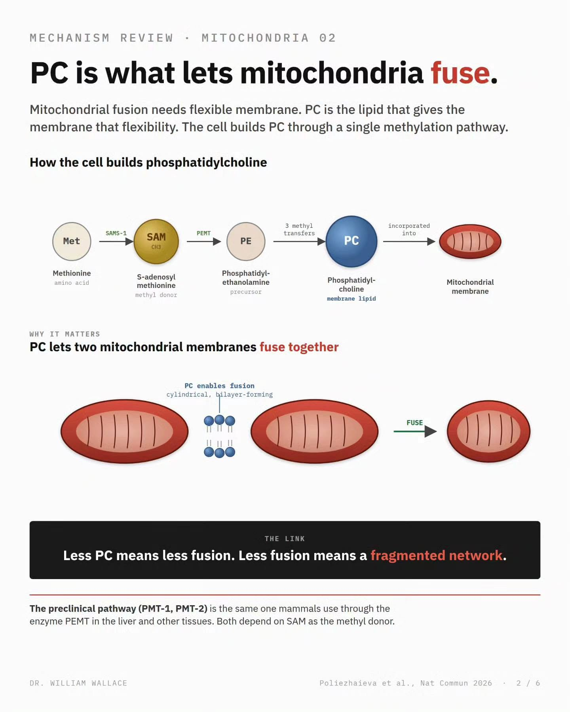
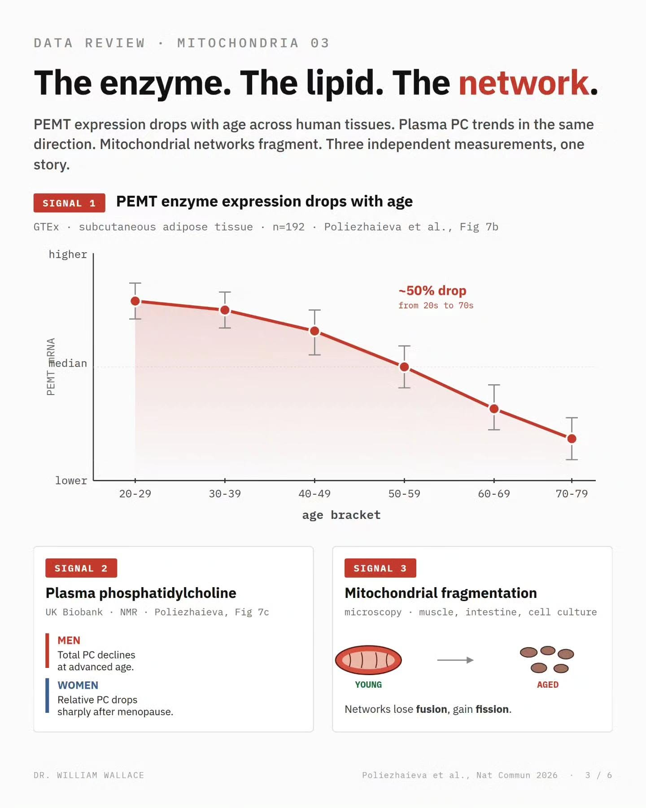
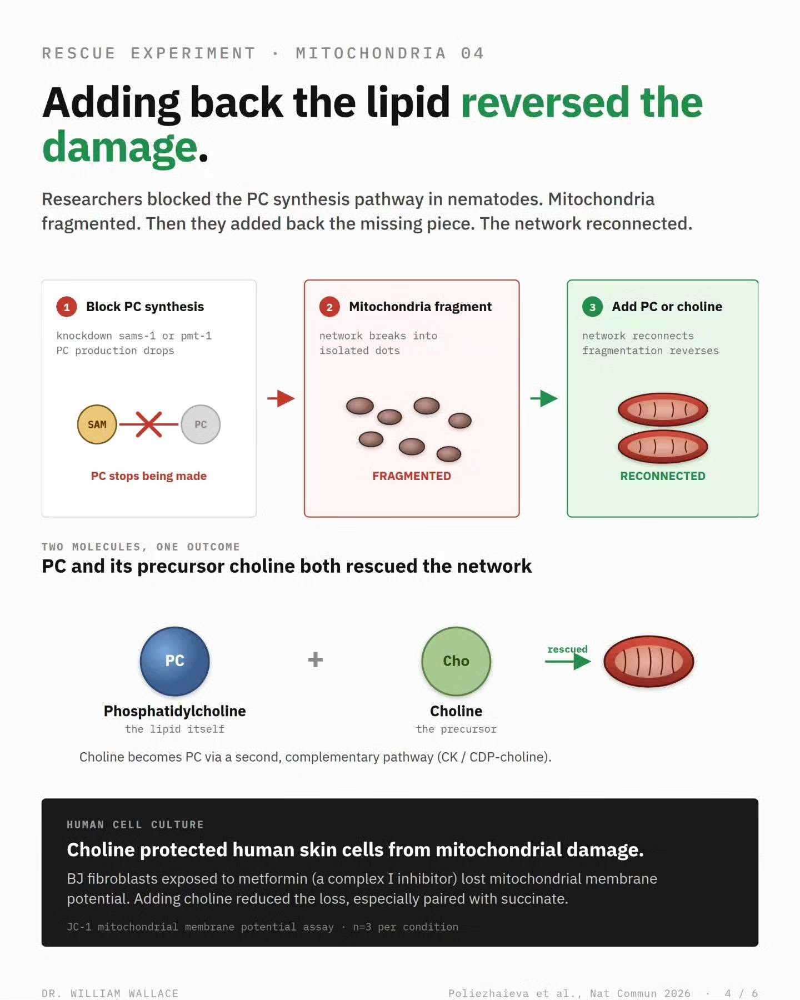
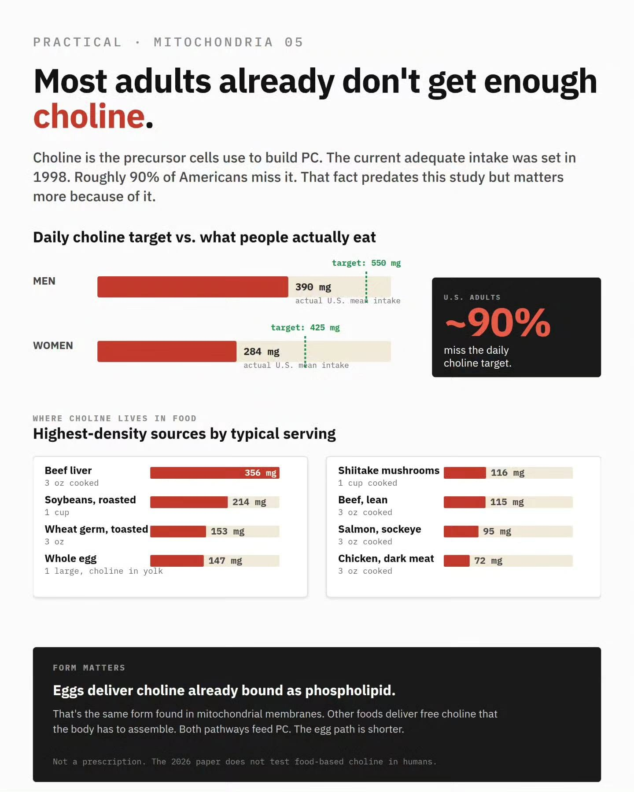

A newly discovered mitochondrial mechanism by which choline might protect the brain and other organs.
(This is a fascinating paper imo. We tend to think of phosphatidylcholine as important for building cell membranes, but forget that it is also essential for building and maintaining mitochondrial membranes. Breakdown of these mitochondrial membranes with advancing age might play an important role in various diseases, including the aging process itself. It might be especially relevant to the development of neurological diseases inside the aging brain, like Alzheimer’s and Parkinson’s.)
Link to journal paper:
scilit.comLink to scilit.comscilit.com
A nice article on the study can be found here:
 SSRP InstituteA Lipid at the Root of Mitochondrial Aging: Phosphatidylcholine, Methylation, and a Malleable Therapeutic Window - SSRP InstituteMitochondrial dysfunction is one of the most firmly established hallmarks of aging, but the field has spent far more energy describing genetic causes ofssrpinstitute.org
SSRP InstituteA Lipid at the Root of Mitochondrial Aging: Phosphatidylcholine, Methylation, and a Malleable Therapeutic Window - SSRP InstituteMitochondrial dysfunction is one of the most firmly established hallmarks of aging, but the field has spent far more energy describing genetic causes ofssrpinstitute.org
#cholineHD #brainHD #dementiaHD #mitochondriaHD #phosphatidylcholineHD
For two decades the dominant story of mitochondrial aging has been damage. Free radicals oxidize the machinery, broken parts pile up, function declines.
That frame produced an entire intervention category: antioxidants, NAD+ precursors, mitophagy boosters.
A new paper in Nature Communications adds a different layer. Mitochondria might also be running out of the building material to make new membrane.
The biology: phosphatidylcholine (PC) is the most abundant phospholipid in mitochondrial membranes. It's what gives those membranes the fluidity needed to fuse together into a connected network. As we age, the enzymes that synthesize PC decline. Less PC, less fusion, fragmented network, lower function, etc. Block PC synthesis in a preclinical model and mitochondria fragment. Add back PC or its precursor choline and the network reconnects.
The rescue evidence is still preclinical. The in vivo recovery is from C. elegans and the human data is cell culture, not RCTs. So this isn't a prescription to take lecithin and live longer.
Practically, roughly 90% of US adults miss the choline adequate intake. Mean intake is 390 mg for men (target 550) and 284 mg for women (target 425). Eggs, beef liver, soybeans, salmon, and shiitake mushrooms are the practical sources. Eggs deliver choline already bound as phospholipid, the same form found in mitochondrial membranes.
Worth taking seriously, IMO
-
References:
Poliezhaieva et al., Nat Commun, 2026
Munden et al., PLOS Biol, 2025
NIH ODS Choline Fact Sheet
Linus Pauling Institute, NHANES 2015-2018




